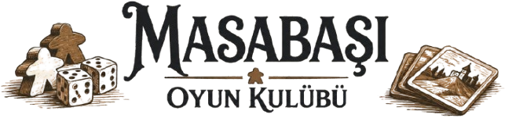
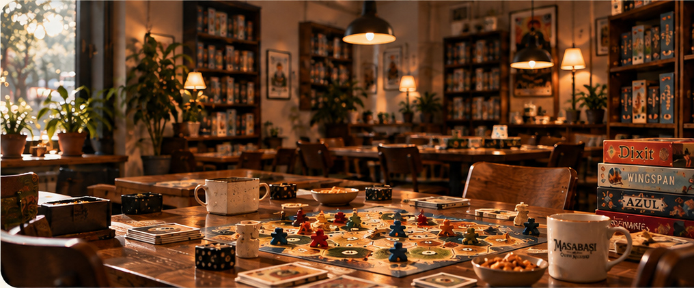
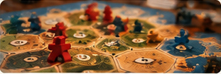
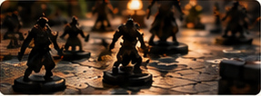
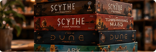
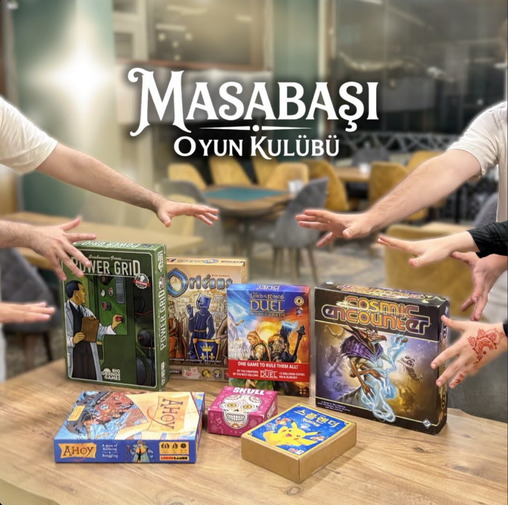

Birlikte Oynuyoruz
Farklı oyunlar, farklı insanlar, aynı masa etrafında buluşuyoruz.

Oyunlar insanları bir araya getirir
Masabaşı Oyun Kulübü, oyunlar etrafında bir araya gelen, yeni insanlarla tanışmayı, keşfetmeyi ve birlikte vakit geçirmeyi seven bir topluluktur.

Farklı oyunlar, farklı insanlar, aynı masa etrafında buluşuyoruz.
Her etkinlikte yeni oyunlar tanıyor, birlikte öğreniyoruz.
Sürekli değişen oyunlar ve yeni buluşma fırsatları.
Oyunlarla kurulan samimi bir topluluğun parçası oluyoruz.
BİRLİKTE OYNAYALIM

Klasikleşmiş bir akşamda Catan masaya geliyor. Hem yeni başlayanlar hem deneyimliler için.

Strateji, taktik ve bolca sohbetle dolu bir akşam.

Farklı oyunları denemek ve yeni insanlarla tanışmak için herkese açık bir buluşma.
AYNI MASADA, BİRLİKTE
Masabaşı, oyunlar etrafında bir araya gelen, yeni insanlarla tanışmayı ve birlikte vakit geçirmeyi seven bir topluluk.
İster ilk kez bir kutu oyununun başına otur, ister yıllardır yeni stratejiler peşinde ol. Burada birlikte öğrenmeye, keşfetmeye ve bir sandalye daha çekmeye her zaman yer var.
Sen de masaya katıl
MASADA SANA DA YER VAR
Yeni oyunlar, yeni masa arkadaşları ve birlikte geçirilecek güzel akşamlar. Discord topluluğumuza katıl; etkinliklerden haberdar ol, sohbetin bir parçası ol.
İlk oyunun mu? Birlikte öğreniriz.
SOHBET MASA DIŞINDA DA SÜRER
Oyunlardan kareler, yeni buluşmalar
ve bir sonraki masanın heyecanı.
Oyunlardan ve birlikte geçirdiğimiz anlardan kareler.
Oyun önerileri, etkinlik duyuruları ve bolca sohbet.